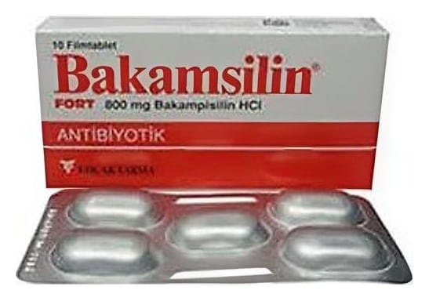

Bakamsilin Fort 800 mg Film Kaplı Tablet, 10 Adet

Ne için kullanılır
KT · Bölüm 1BAKAMSİLİN FORT, penisilin grubu içinde yer alan bir antibiyotiktir.
BAKAMSİLİN FORT, her film kaplı tablette 800 mg bakampisilin içeren bir yüzünde “BAK 800” diğer yüzünde “KOÇAK” yazılı oval, beyaz, çentikli, eşit yarımlara bölünebilir, 10 tabletlik blister ambalajlarda bulunur. BAKAMSİLİN FORT’da yardımcı madde olarak bulunan laktoz anhidr sığır kaynaklıdır.
BAKAMSİLİN FORT, ampisiline hassas olduğu düşünülen mikroorganizmaların neden olduğu, aşağıda belirtilen enfeksiyonların tedavisinde kullanılır: - Alt ve üst solunum yolu enfeksiyonlarında - İdrar yolu enfeksiyonlarında - Deri ve yumuşak doku enfeksiyonlarında
- Komplike olmayan gonorede